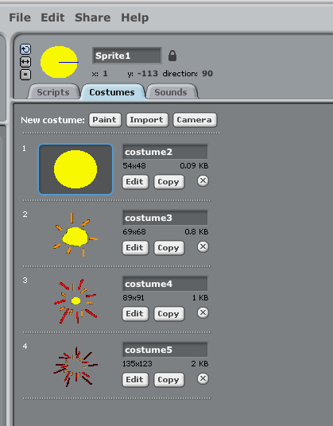
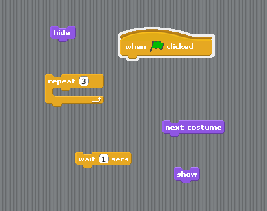

Teaching Point:
Today we will learn how to use the Wait block to make Animations.
Animation in Scratch
We can use costumes to make our character look like it is moving. The key to a good animation is that the two costumes are almost exactly the same with just one small difference.
Then we just make the sprite switch to the next costume over and over again until it makes it to the last costume. Don't forget to put a wait block in the code so that it doesn't go too fast.
Today's Assignment
Create 3 or more new costumes in your Coin Sprite to show the coin disappearing or exploding. Then use a Wait/Next Costume block to make the coin disappear when touched by the Cat Sprite.
Extension Activity
Add sound to the coin animation.
Back to School Portal